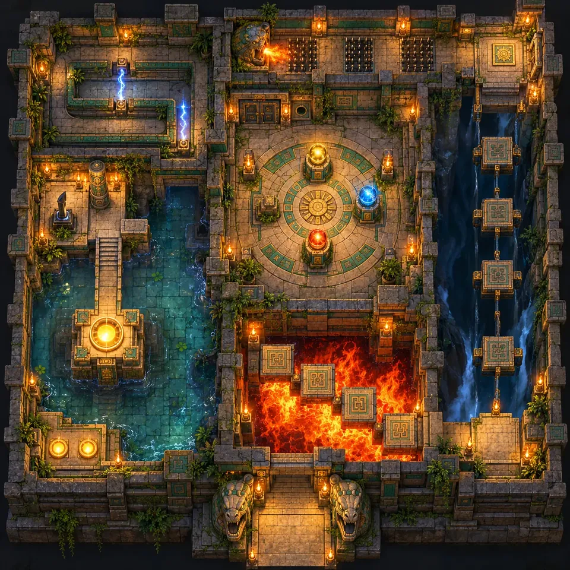
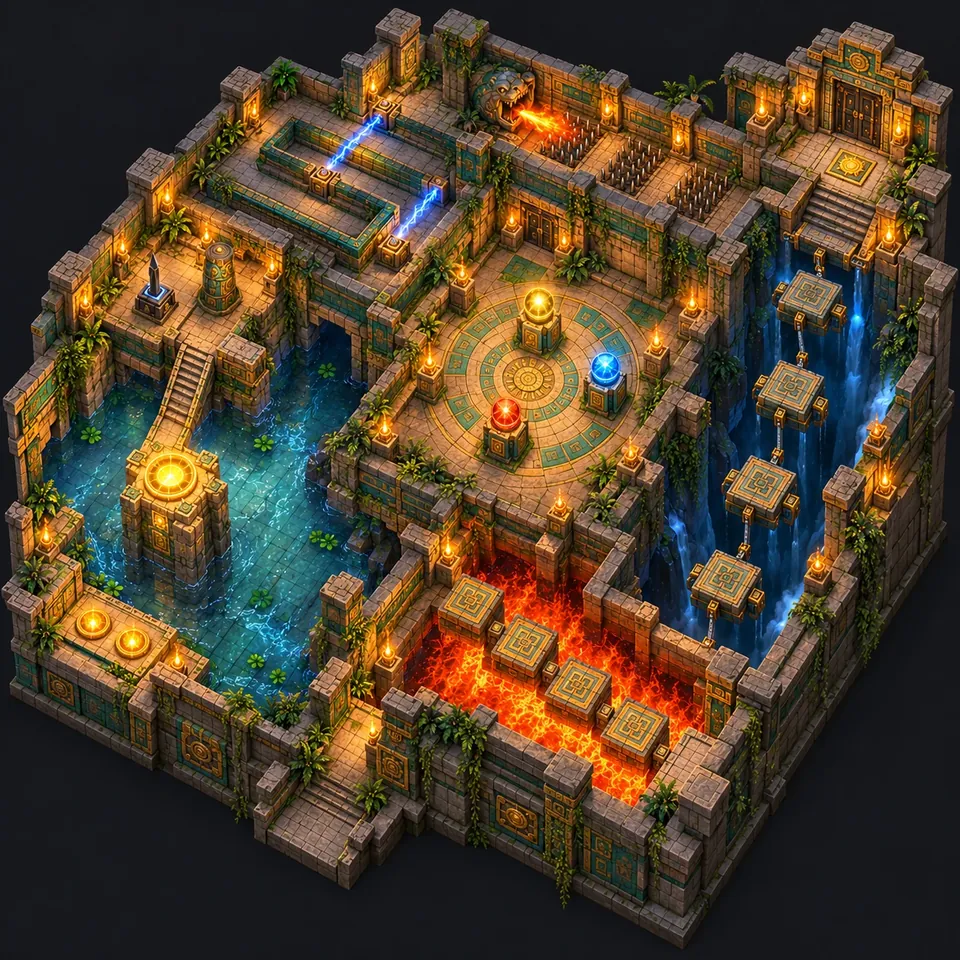
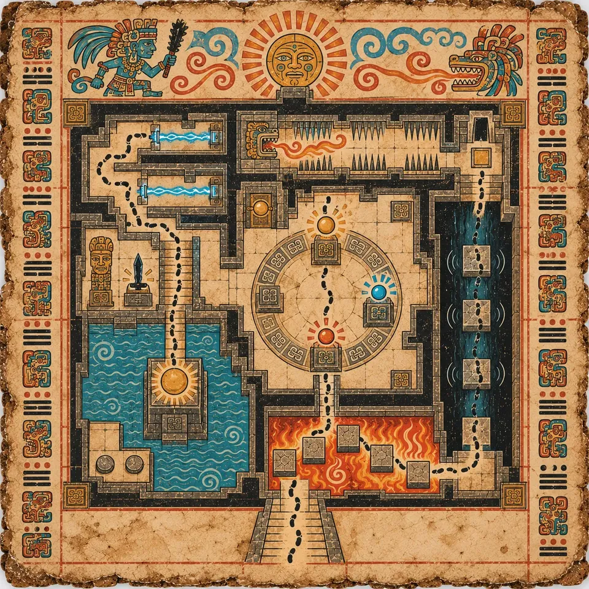

F0-01
Start / Der Aufstieg
Der Aufstieg
Die Tutorial-Ebene: neun Räume auf einer Route, und jedes Grundverb wird genau einmal gelehrt.
The Shell wurde als ein einziges Objekt entworfen, bevor auch nur ein Raum gemalt wurde. Schnitt, Grundriss und Codexseite beschreiben dieselben neun Räume und die eine Route hindurch.
Die Route windet sich von einem gefluteten Atrium nach oben bis zu einem Portal auf der Spitze der Sonnensäule, die in genau diesem Atrium steht. Sie ist das Tutorial: Sie lehrt jedes Grundverb genau einmal und keines doppelt.



In der Reihenfolge, in der die Gruppe sie betritt, vom gefluteten Atrium bis zum Portal auf der Sonnensäule.

Hier kommt die Gruppe an, und Kaya zeigt neben ihr hinauf zum Leuchten des Portals. Weit, still und erhellt von einem einzigen Lichtschacht im Dach, damit du Kamera und Sprung lernen kannst, ohne dass etwas auf dem Spiel steht.
Auf einer halb überfluteten Stufe ruht Ix Nicte, die Hüterin der ersten Stufe.

Fünf Trittsteine über einer Grube voller Flammen. Die erste Gefahr, und die, die dir beibringt, das Timing am Boden abzulesen statt an einem Gegner.

Der Boden endet über einer tiefen Schlucht. Gleitende Steinplatten und schwebende Plattformen tragen dich hinüber, und keine davon wartet auf dich. Auf einem Vorsprung glänzt ein goldenes Idol.

Stell dich auf die gemeißelte Platte, und die Tür hebt sich. Steig herunter, und sie fällt. Der erste Raum, in dem du darüber nachdenken musst, wo dein Gewicht steht.

Zwei Gefahren in unterschiedlichem Rhythmus in einem engen Gang: einfahrende Stacheln im Boden und eine steinerne Schlange, die am Ende Feuer speit. Einmal durchzukommen ist Glück; sauber durchzukommen heißt, dass du beide Takte gelernt hast.
Hier stirbt Kaya, in der Kurzgeschichte wie im Spiel: Sie löst die Stacheln aus und zerfällt in goldenes Licht.

Kugeln auf Sockeln, gold, blau und rot, um einen Ring aus Glyphen, mit genau einer richtigen Anordnung. K'in lässt die Kugel aufleuchten, die falsch liegt, nicht die richtige, damit das Lösen deine Sache bleibt.

Blauweiße Energiestrahlen kreuzen eine Serpentinenrampe und schalten im Takt an und aus. Hier wird nichts ausgewichen. Hier wird gegangen, in der richtigen Hälfte der Sekunde.

Ein Kletterer hebt das Obsidian-Macuahuitl von seinem Sockel, und der erste Wächter erhebt sich. Der erste echte Kampf, auf einem hohen Absatz über dem Atrium, und die Gruppe kämpft ohne Kaya.

Eine schmale Brücke führt hoch über das Atrium zum runden Portal auf der Spitze der Sonnensäule. Tritt hindurch, und The Shell versiegelt sich hinter dir, das Schwert in der Hand.
Danach die Portalkammer und hinauf in die überfluteten Fundamente.
F0-01

F0-02

F0-03